3.2 虚拟内存管理
3.1 节的各种内存管理方式都有一个共同前提：程序必须（基本）整体装入内存才能运行。本节介绍的虚拟内存打破了这一前提，让系统能够运行比物理内存大得多的程序。学习时请带着三个问题：
- 为什么要引入虚拟内存？
- 虚拟内存空间的大小由什么因素决定？
- 虚拟内存是怎么解决问题的？会带来什么问题？
本节要求掌握虚拟内存解决问题的思想，了解各种页面置换算法的优劣，并熟练掌握逻辑地址（虚地址）到物理地址（实地址）的变换方法。（本节末尾的 3.2.9 会结合计算机组成原理中的 Cache 给出一个完整的地址翻译实例。）
3.2.1 虚拟内存的基本概念
传统存储管理方式的两个特征
3.1 节讨论的各种内存管理策略，目的都是让多个进程同时保留在内存中以支持多道程序设计，它们有两个共同特征：
- 一次性：作业必须一次性全部装入内存后才能开始运行。由此带来两个问题：①作业过大、无法全部装入时，该作业根本无法运行；②大量作业请求运行而内存不足时，只能让少数作业先运行，系统并发度因此下降。
- 驻留性：作业一旦装入内存便一直驻留其中，任何部分都不会被换出，直至运行结束。可是运行中的进程常因等待 I/O 而阻塞，长时间闲置却仍然占着内存。
可见，许多暂时不用的代码和数据占据着大量内存空间，而急需运行的作业却因内存不足无法装入——这是对宝贵内存资源的浪费。要突破这个瓶颈，就要靠虚拟内存技术。
局部性原理
广义上讲，快表、页高速缓存及虚拟内存都属于缓存技术，它们共同依赖的原理就是局部性原理。局部性既适用于程序结构，也适用于数据结构，表现在两个方面：
- 时间局部性：某条指令或某个数据项一旦被访问，不久之后很可能再次被访问，主要源于程序中大量的循环和重复操作。
- 空间局部性：一旦程序访问了某个存储单元，不久之后其附近的存储单元也很可能被访问，因为指令通常顺序存放、顺序执行，而数组、表等数据一般以连续或簇聚方式存储。
时间局部性通过把近期使用的指令和数据保存在高速缓存中、借助多级缓存层次加以利用；空间局部性则通过采用较大容量的缓存并在缓存控制逻辑中集成预取机制来实现。虚拟内存技术正是基于局部性原理，把外存作为内存的“透明扩展”，从而有效缓解物理内存的不足。
虚拟存储器的定义与特征
基于局部性原理，程序装入时只需将当前运行所需的少数页面（或段）装入内存，其余留在外存，即可启动执行。执行过程中若访问的信息不在内存，由操作系统自动将其从外存调入（请求调页／请求调段）；内存不足时，再把暂时不用的信息换出到外存以腾出空间（页面置换／段置换）。通过这两种机制的配合，系统为用户提供了一个逻辑上远大于物理内存的地址空间，这就是虚拟存储器（虚拟内存）。
之所以称“虚拟”，是因为它并非真实存在的物理实体，而是操作系统通过部分装入、请求调入和置换功能（均对用户透明）构造出的一种逻辑抽象——用户程序可以像使用大容量内存一样运行，无须关心物理内存的实际大小。虚拟存储器有三个主要特征：
- 多次性：作业无须在运行前一次全部装入，而是分多次动态调入，先装入当前需要的部分即可开始运行。
- 对换性：作业在运行期间无须常驻内存，暂时不用的程序或数据可换出到外存对换区，需要时再换入。
- 虚拟性：从用户视角看，内存容量被逻辑扩充，呈现出远大于物理内存的可用空间。虚拟性是虚拟存储器的本质特征和根本目标，其实现依赖于多次性与对换性。
虚拟内存技术的实现
虚拟内存允许把一个作业分多次调入内存。若采用连续分配方式，会在内存中留下大片暂时甚至“永久”空闲的区域，既浪费内存，也无法从逻辑上扩充容量。因此，虚拟内存的实现必须建立在离散分配的基础之上。目前主要有三种实现方式：
- 请求分页存储管理；
- 请求分段存储管理；
- 请求段页式存储管理。
无论哪种方式，都需要一定的硬件支持，主要包括：
- 足够容量的内存和外存：分别存放程序的当前部分与后备部分；
- 页表机制（或段表机制）：作为地址映射的关键数据结构；
- 中断机构：当用户程序访问尚未调入内存的部分时，触发缺页（或缺段）中断；
- 地址变换机构：在程序运行过程中动态完成逻辑地址到物理地址的转换。
3.2.2 请求分页管理方式
请求分页系统建立在基本分页系统之上，为支持虚拟存储器增加了请求调页和页面置换两大功能：作业运行前只需装入一部分页面即可启动；运行中访问的页面不在内存时，通过请求调页功能从外存调入；内存不足时，通过页面置换功能把暂时不用的页面换出。由于每次换入换出的单位都是长度固定的页面，请求分页比以长度可变的段为单位的请求分段更容易实现，也因此成为目前最常用的虚拟存储器实现方式。实现请求分页所需的硬件支持包括：足够容量的内存和外存、页表机制、缺页中断机构以及地址变换机构。
页表机制
与基本分页系统相比，请求分页的页表要回答四个问题：①该页是否已调入内存；②若未调入，它在外存的什么位置；③置换时依据什么挑选换出页；④要换出的页是否被修改过（决定是否需要写回外存）。为此，页表项在“页号＋物理块号”的基础上增加了四个字段，其结构如下表所示（对应教材图 3.19）。
| 页号 | 物理块号 | 状态位 P | 访问字段 A | 修改位 M | 外存地址 |
|---|
- 状态位 P（存在位）：标记该页是否已调入内存，供地址变换时判断是否触发缺页中断。
- 访问字段 A：记录本页在一段时间内的访问次数，或记录自上次访问以来经过的时间，供页面置换算法挑选换出页时参考。
- 修改位 M（脏位）：标记该页调入内存后是否被修改过，以决定换出时是否需要写回外存。
- 外存地址：指出该页在外存中的存放位置（通常为物理块号），供调页时读入内存。
缺页中断机构
当进程访问的页面尚未调入内存时，硬件会自动触发缺页中断，转由操作系统的缺页中断处理程序处理：把所需页面从外存调入内存（必要时先换出一页）。具体地：若内存中有空闲页框，则分配一个页框装入所缺页面，并更新页表中的相应表项；若无空闲页框，则先由置换算法选出一个页面淘汰——被淘汰页若在内存中被修改过，必须先写回外存，否则可直接丢弃。由于页面调入通常涉及较长时间的磁盘 I/O，系统在此期间可以调度其他进程运行；待页面调入完成后，重新执行引发缺页的那条指令。
缺页中断属于内中断，其处理过程与其他中断类似，同样要经历保护 CPU 现场、分析中断原因、转入中断处理程序、恢复 CPU 现场等步骤，但它有两个显著特点：
- 在指令执行期间触发：由当前指令的访存操作直接引发并立即处理，而不是等一条指令执行完毕后才响应。
- 一条指令执行过程中可能引发多次缺页：例如执行 copy A to B 时，若该指令本身和两个操作数各自跨越两个页面，则最多可能产生 6 次缺页中断。
地址变换机构
请求分页的地址变换机构在基本分页的基础上增加了缺页（越界）处理与请求调页的逻辑，完整流程如教材图 3.20 所示。
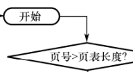
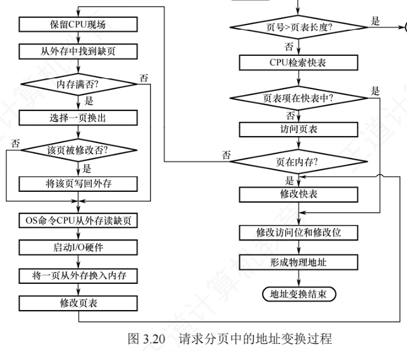
变换过程可概括为四步：
- 检索快表：若命中，直接取出该页的物理块号，并把该页的访问位置 1（供置换算法参考）；若是写操作，还要把修改位置 1。
- 快表未命中则访问页表：若该页已在内存（状态位 = 1），从页表项取出物理块号，并把该表项写入快表；若快表已满，按置换算法淘汰其中一项。
- 页面不在内存则触发缺页中断：操作系统接管后把所需页面从外存调入（必要时先按置换算法换出一页），并更新页表和快表，然后重新进行地址变换以取得物理块号。
- 拼接物理地址：把得到的物理块号与页内地址拼接成物理地址，完成访存。
3.2.3 页框分配
为进程分配内存时，需要解决三个问题：①为保证进程正常运行，最小页框数如何确定；②分配给进程的页框是固定的还是可变的；③在各进程之间是平均分配还是按进程大小比例分配。
最小页框数与驻留集
最小页框数（最小物理块数）指保证进程正常运行所需的最少页框数量，少于该值进程将无法执行。它由计算机的硬件结构决定，具体取决于指令的格式、功能和寻址方式：
- 采用单地址指令、直接寻址的简单机器：至少 2 个页框，一个放指令、一个放数据；
- 支持间接寻址：至少 3 个页框，分别放指令、指针和数据；
- 功能较强的机器：若一条指令及其两个操作数各自跨越两个页面，最坏情况下一条指令涉及 6 个不同页面，因此至少应为每个进程分配 6 个页框。
驻留集指操作系统为进程分配的页框集合。进程启动时既不需要、也不可能把全部页面装入内存，驻留集大小的选择要在并发度与缺页开销之间权衡：
- 驻留集过小：内存能容纳更多进程，并发度提高；但每个进程页框太少，缺页率显著上升，CPU 大量时间耗费在处理缺页中断上。
- 驻留集过大：页框数超过一定阈值后，再增加页框对缺页率的改善趋于平缓，既浪费内存，又因可用页框总量减少而降低系统整体并发能力。
内存分配策略
分配策略有固定分配和可变分配两种，置换策略有全局置换和局部置换两种，二者组合出三种实际可用的策略：
- 固定分配局部置换：为每个进程分配固定数目的页框，运行期间保持不变；缺页时只能从该进程自己的页框中选一页换出，驻留集大小恒定。难点在于初始分配量难以拿捏：太少则频繁缺页，太多则浪费内存并减少可容纳的并发进程数。
- 可变分配全局置换：先为每个进程分配一定页框，运行期间可动态调整；缺页时系统优先从空闲页框队列中取一个分配给该进程，空闲页框耗尽后才从内存所有页框（不论属于哪个进程）中选择换出。该策略更灵活，能动态扩充进程驻留集；但若缺乏调控，活跃进程可能不断抢占其他进程的页框，削弱系统并发能力。
- 可变分配局部置换：初始为每个进程分配一定页框；缺页时只从自己的页框中换出一页，不影响其他进程。同时系统根据缺页率动态调整驻留集：缺页率过高说明页框不足，为其增加页框；缺页率过低说明存在冗余，可适当回收部分页框（但以不引起缺页率明显上升为限）。该策略能有效抑制频繁调页，又兼顾并发度；实现复杂、开销较大，但相比频繁换入换出消耗的磁盘 I/O 与 CPU 资源，这一开销是值得的。
页框调入算法
采用固定分配策略时，系统需要把空闲页框分给各进程，常见算法有三种：
- 平均分配算法：把系统中所有可供分配的页框平均分给各个进程；
- 按比例分配算法：根据各进程逻辑地址空间的大小按比例分配；
- 优先权分配算法：为重要、紧迫的进程分配更多页框，通常做法是把可分配页框分成两部分，一部分按比例分配，另一部分按进程优先权动态分配。
调入页面的时机
决定何时把所缺页面调入内存，有两种调页策略：
- 预调页策略：由局部性原理可知，一次调入若干相邻页面通常比逐页调入更高效。但如果预调入的页面大多未被访问，反而浪费内存。目前预测的成功率仅约 50%，效果有限，因此该策略主要用于进程首次装入时，由程序员显式指定应优先加载的页面。
- 请求调页策略：进程运行中访问到不在内存的页面时触发缺页中断，由系统将其调入。这种方式调入的页面必然会被访问，实现也简单，因此当前虚拟存储器大多采用；缺点是每次只调一页，磁盘 I/O 开销较大。
简言之，预调页是在进程运行前完成页面加载，请求调页是在运行期间动态调入。
从何处调入页面
请求分页系统的外存分为两部分：存放文件的文件区（离散分配）和存放换出页面的对换区（连续分配）。对换区采用连续分配方式，其磁盘 I/O 速度通常快于文件区。发生缺页时，页面来源有三种情况：
- 系统拥有足够的对换区空间：页面一律从对换区调入以提高调页速度；为此需在进程运行前把相关文件从文件区复制到对换区。
- 对换区空间不足：不会被修改的页面直接从文件区调入，换出时因内容未变无须写回磁盘；可能被修改的页面，换出时保存到对换区，之后再调入时也从对换区读取，兼顾效率与正确性。
- UNIX 方式：与进程相关的文件始终保留在文件区。从未运行过的页面从文件区调入；曾经运行过、后来被换出的页面存放在对换区，再调入时从对换区读取。若多个进程共享同一页面且该页已在内存，其他进程直接复用，无须重复调入。
如何调入页面
进程访问的页面不在内存时（页表项的存在位为 0），CPU 触发缺页中断并转入缺页中断处理程序：先从页表项取得该页的外存地址，再判断内存是否已满。若未满，分配一个空闲页框，发起磁盘 I/O 调入所缺页面，并更新页表项（填写物理块号、置存在位为 1）；若已满，按某种置换算法选出一页准备换出——修改位为 0 的直接丢弃，修改位为 1 的先写回对换区再释放页框——然后把所缺页面调入该页框并更新页表项。调入完成后，进程即可通过更新后的页表形成正确的物理地址。整个调入过程由操作系统自动完成，对用户完全透明。
3.2.4 页面置换算法
进程运行中要调入的页面不在内存、而内存又无空闲页框时，必须从内存中换出一页。选择换出哪一页的算法称为页面置换算法（也常称淘汰算法）。页面的换入换出都要进行磁盘 I/O、开销较大，因此好的置换算法应致力于降低缺页率。常见的算法有 OPT、FIFO、LRU、CLOCK 四种，学习时要牢牢把握每种算法“依据什么挑选被淘汰页”这一核心。
最佳（OPT）置换算法
最佳（Optimal, OPT）置换算法在缺页时选择以后永不使用、或在最长时间内不再被访问的页面淘汰，理论上可获得最低缺页率。但操作系统无法预知进程未来的访问序列，所以 OPT 无法实现；它的价值在于理论标杆作用，常用来评价其他算法的优劣。
【例】为某进程分配 3 个物理块，页面访问序列为
7, 0, 1, 2, 0, 3, 0, 4, 2, 3, 0, 3, 2, 1, 2, 0, 1, 7, 0, 1运行时先把 7、0、1 依次装入内存。访问页面 2 时缺页，OPT 淘汰未来最久才被访问的页面 7（它的下一次访问在第 18 次，比 0、1 都晚）。接着访问 0 命中；访问 3 时再次缺页，此时页面 1 的下次访问（第 14 次）最晚，淘汰 1。以此类推，过程如图 3.21 所示。
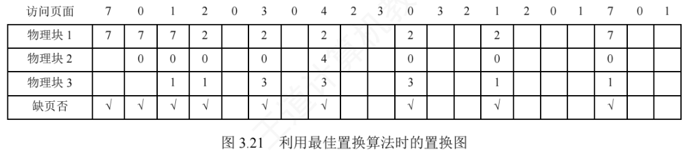
整个过程中共发生 9 次缺页中断，其中 6 次触发了页面置换（不计初始装入的 3 次）。
先进先出（FIFO）置换算法
先进先出（First In First Out, FIFO）算法淘汰最早进入内存的页面：把内存中的页面按调入时间组织成队列，换出时直接移除队首页面，实现非常简单。但 FIFO 没有利用局部性原理，与进程实际运行规律不符——最早装入的页面往往仍被频繁访问，因此性能通常较差。
仍用上面的例子：访问页面 2 时缺页，淘汰最早进入的页面 7；随后访问页面 3 时再次缺页，把 2、0、1 中最先进入的页面 0 换出。以此类推，过程如图 3.22 所示，共发生 15 次缺页中断，其中 12 次触发页面置换。
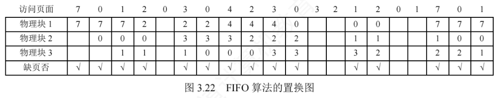
FIFO 还存在一种反直觉现象：分配的物理块数增加，缺页次数反而可能上升，称为 Belady 异常。其根源在于 FIFO 只依据调入时间决策，完全忽略页面的实际使用情况。例如页面访问序列为
3, 2, 1, 0, 3, 2, 4, 3, 2, 1, 0, 4分配 3 个物理块时缺页 9 次；分配 4 个物理块时缺页反而增加到 10 次，如图 3.23 所示。
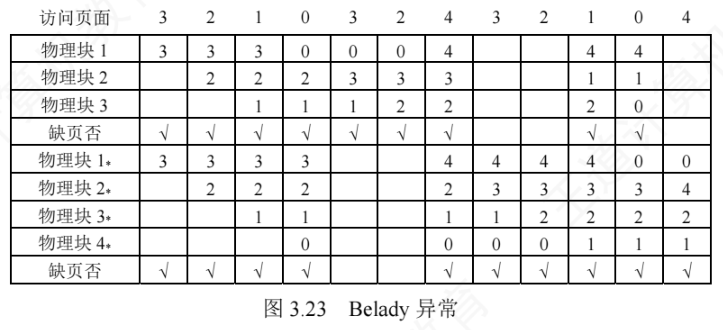
最近最久未使用（LRU）置换算法
最近最久未使用（Least Recently Used, LRU）算法淘汰最近最长时间未使用的页面，其依据是：若某页面在过去很长一段时间未被访问，则近期它也很可能不会被访问。为此需为每个页面设置访问字段，记录该页自上次被访问以来所经历的时间，淘汰时选择该值最大的页面。
仍用前面的例子：首次访问页面 2 时缺页，换出最近最久未使用的页面 7；随后访问页面 3 时缺页，换出最近最久未使用的页面 1。过程如图 3.24 所示。
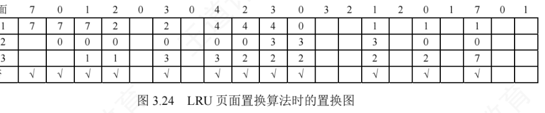
由图可见，LRU 前 5 次缺页的处理结果与 OPT 相同——但这只是巧合，并无必然联系：LRU 依据页面过去的使用情况判断，是“向前看”的；OPT 依据页面未来的使用情况判断，是“向后看”的，而过去与未来之间并无必然联系。
时钟（CLOCK）置换算法
LRU 性能接近 OPT，但实现开销大。为此人们设计了许多以较小开销逼近 LRU 性能的算法，这类算法统称为 CLOCK 算法（及其变体）。
简单的 CLOCK 算法
简单的 CLOCK 算法为每个页面设置一个访问位：某页首次装入内存或被访问时，访问位置 1。所有页框组织成一个循环队列，并设一个替换指针指向当前检查位置。缺页需置换时按如下规则操作：若指针所指页面的访问位为 0，直接淘汰该页；若为 1，则把它置 0，指针移向下一页面，给这页一次“宽恕”机会，待后续轮询再判断。因为指针在队列上循环移动、形如时钟指针，故得名 CLOCK 算法；又因它仅依据“最近是否被使用”这一粗略信息决策，也称最近未用（NRU）算法。
【例】页面访问序列为
7, 0, 1, 2, 0, 3, 0, 4, 2, 3, 0, 3, 2, 1, 3, 2采用简单 CLOCK 算法，分配 4 个页框，每个页框记录（页面号，访问位），过程如图 3.25 所示。
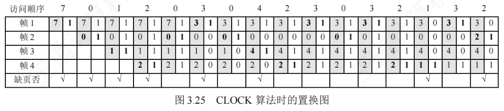
逐步分析各次缺页（对应图 3.26）：
- 初始阶段，页面 7、0、1、2 依次调入 4 个页框，访问位均为 1；随后访问 0，命中，访问位保持 1。此时所有页框的访问位都是 1。
- 访问 3 时发生第 5 次缺页。替换指针位于帧 1，所有访问位均为 1，算法完整扫描一圈、把各帧访问位清零，指针回到帧 1，于是淘汰帧 1 中的页面 7，装入页面 3 并置其访问位为 1，如图 3.26(a) 所示。
- 访问 0 命中（其访问位置 1）；访问 4 时发生第 6 次缺页。替换指针指向帧 2（上次替换位置的下一帧），帧 2 访问位为 1，置 0 后继续扫描；帧 3 访问位为 0，故淘汰帧 3 中的页面 1，装入页面 4，如图 3.26(b) 所示。
- 此后访问 2、3、0、3、2 均命中，每次访问把对应帧的访问位置 1。访问 1 时发生第 7 次缺页：替换指针指向帧 4 且所有帧访问位均为 1，算法再次扫完一圈并将访问位清零，淘汰帧 4 中的页面 2。
- 访问 3 命中（访问位置 1）；访问 2 时发生第 8 次缺页：替换指针指向帧 1，其访问位为 1，置 0 后继续扫描，帧 2 访问位为 0，淘汰帧 2 中的页面 0，装入页面 2。
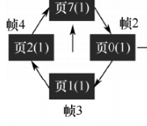
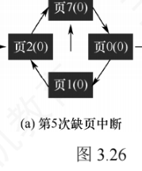
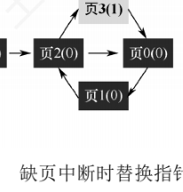
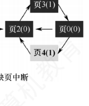
改进型 CLOCK 置换算法
把一个页面换出时，若它已被修改就要写回磁盘，未被修改则不必写回——修改过的页面置换代价更高。为降低 I/O 开销，改进型 CLOCK 算法在访问位 A 的基础上引入修改位 M，综合考虑页面的使用情况与置换代价，优先淘汰既未被访问又未被修改的页面。按（A, M）组合，页面分为四类：
| 类别 | A | M | 含义 | 淘汰优先级 |
|---|---|---|---|---|
| 1 类 | 0 | 0 | 最近未访问，且未修改 | 最佳淘汰页（第 1 优先） |
| 2 类 | 0 | 1 | 最近未访问，但已修改 | 次佳淘汰页（第 2 优先） |
| 3 类 | 1 | 0 | 最近已访问，未修改 | 可能再被访问（第 3 优先） |
| 4 类 | 1 | 1 | 最近已访问，且已修改 | 最不宜淘汰（第 4 优先） |
内存中的每一页必属四类之一。置换时同样采用循环扫描，区别是要同时检查 A 与 M 两位，步骤如下：
- 从指针当前位置开始第一轮扫描，寻找 A = 0 且 M = 0 的 1 类页面，把找到的第一个作为淘汰页；本轮扫描不修改任何访问位。
- 若失败，进行第二轮扫描，寻找 A = 0 且 M = 1 的 2 类页面，把找到的第一个作为淘汰页；本轮把扫描经过的页面访问位 A 全部置 0。
- 若前两轮都失败（所有页面 A 均为 1），则把指针回到起始位置，将所有帧的访问位清零，重复第 1 步；若仍无 1 类页面，则执行第 2 步——此时必能找到可淘汰页面。
改进型 CLOCK 优于简单 CLOCK 之处在于：优先淘汰未修改的页面，从而减少磁盘写回的 I/O 开销；代价是为找到合适的淘汰页可能要多轮扫描，算法本身的运行开销增加。各种置换算法遵循同一原则：尽可能保留近期访问过的页面，优先淘汰未访问过的页面。简单 CLOCK 只用访问位区分“是否被访问过”；改进型则进一步细化——对未访问过的页面优先换出其中未修改者；即使所有页面都被访问过，也优先换出未修改者，把磁盘写回成本降到最低。
*3.2.5 抖动和工作集 课外拓展
抖动
页面置换中最糟糕的情形是：刚换出的页面马上又要换入，刚换入的页面又立刻被换出。这种频繁的页面调度行为称为抖动（又称颠簸）。
发生抖动的根本原因是：分配给进程的物理块太少，无法满足其正常运行的基本需求，导致进程执行过程中频繁缺页、反复请求调页。此时磁盘 I/O 频率急剧上升，进程的大部分时间耗费在页面换入换出上，几乎无法完成有效计算，CPU 利用率随之急剧下降，甚至趋近于零。抖动是虚拟存储系统的严重性能问题：既然其根源是进程驻留集过少，人们就提出了工作集的概念，用以动态指导页框分配。
工作集
工作集指在某段时间间隔内，进程实际访问页面的集合，通常用时间 \(t\) 和工作集窗口尺寸 \(\Delta\) 描述，记作 \(W(t,\Delta)\)。例如某进程的页面访问序列为
1, 4, 2, 3, 5, 3, 2, 2, 1, 1, 1, 3, 4, 5, 4, 4, 2, 1, 1, 3, 3取窗口尺寸 \(\Delta = 5\)：若某时刻之前（含该时刻）的 5 次访问为 3, 5, 3, 2, 2，则此刻的工作集为 {2, 3, 5}；若为 4, 2, 1, 1, 3，则工作集为 {1, 2, 3, 4}。实际应用中窗口通常设置得较大，对局部性好的程序，其工作集大小一般远小于 \(\Delta\)。由于工作集反映了进程随后一段时间内很可能频繁访问的页面集合，驻留集大小不应小于工作集大小，否则进程将频繁缺页。
3.2.6 页框回收
页框回收是 2025 年统考大纲新增考点。2012 年统考真题第 45 题其实已经涉及：它把页框回收的过程描述为“被系统回收的页框，放入空闲页框链尾，其中内容在下一次分配之前不清空”——这正是页面缓冲算法中空闲页面链表的定义。页框回收算法本身较为复杂，主流教材通常不系统介绍，细节多见于剖析 Linux 内核的图书，在 408 中出现的概率极低，这里只要求掌握页面缓冲算法的思想。
页面缓冲算法
在页式虚拟存储系统中，页面换入换出的开销对性能影响显著，主要影响因素有：
- 页面置换算法的选择：好的置换算法能降低缺页率，减少换入换出频率；
- 已修改页面写回磁盘的频率：脏页换出必须写回磁盘，写回越频繁开销越大；
- 磁盘内容读入内存的频率：每次访问缺失页都从磁盘重读，会造成高频磁盘 I/O。
页面缓冲（页面缓冲算法）在原有置换算法的基础上增设修改页面链表，暂存已修改、待换出的页面，积累到一定数量后再批量写回磁盘，以减少换出开销。具体地，系统在内存中维护两个专用链表：
- 空闲页面链表（空闲页框链表）：进程需要读入页面时，从链表头部取一个页框装入。未被修改的页面被换出时不写回磁盘，其页框直接挂到链表末尾，页框中仍保留原页面数据；若之后又有进程访问同一页面，可直接取下该页框复用，避免从磁盘重读，减少换入开销。
- 修改页面链表：已修改页面被换出时不立即写盘，其页框挂到链表末尾；积累足够多的脏页后批量写回磁盘。这样既降低了写回频率，也减少了因数据缺失而重新读盘的次数。
这种用链表管理物理页框、延迟实际 I/O 的机制，就是页框回收的过程。页面缓冲算法的优点：①显著降低页面换入换出频率，大幅减少磁盘 I/O 开销；②即使采用简单的置换策略（如 FIFO）也能获得良好性能，且无须特殊硬件支持，实现简单高效。
页框回收的过程
系统可分配内存不足时必须回收页框，但并非所有页框都可回收：属于内核的大部分页框（内核栈、内核代码段、内核数据段及大部分内核使用的页框）不可回收；进程使用的页框（进程代码段、数据段、堆栈、访问文件时映射的文件页、进程间共享内存占用的页框）则大多可以回收。
Linux 内核设置了负责页面换出的守护进程 kswapd，它定期检查内存使用情况，当空闲页框数低于特定值时主动发起回收。之所以不能等空闲页框完全耗尽才回收，是因为释放脏页通常要先把它写回磁盘，而磁盘 I/O 往往需要临时页框作为缓冲区——若此时已无空闲页框，既分不到 I/O 缓冲区、也无法完成页面释放，内核可能陷入内存分配死锁甚至崩溃。
Linux 采用 3.1.2 节介绍的伙伴算法统计和管理不同长度的连续空闲页框：连续空闲页组织成“空闲块”，按大小（所含连续页框数）分组。分配页框是“化整为零”的过程，会产生外部碎片，因此系统必须能把零碎页框重新合并成较大的连续块。页框回收正是伙伴算法的逆操作：一个页框被释放时，先检查是否存在大小相等的伙伴空闲块；若存在，则合并为一个大小翻倍的新空闲块，再继续向上检查新块能否与更高一级的伙伴合并，直至无法合并为止。
3.2.7 内存映射文件
内存映射文件（Memory-Mapped Files）是操作系统向应用程序提供的一种系统调用机制，它在磁盘文件与进程的虚拟地址空间之间建立直接映射关系，与虚拟内存机制紧密相关。
进程通过该系统调用把一个文件映射到自己虚拟地址空间的某一区域后，就可以像访问内存一样读写文件——相当于把文件当作内存中的一个大字符数组来访问，而无须调用传统的文件 I/O 接口，使用更为便捷。磁盘文件的实际读写由操作系统完成，对进程透明。建立映射时并不立即装入文件内容，而是进程首次访问某一页时才按需调入；待进程退出或显式解除映射时，所有被修改的页面才写回磁盘文件。
进程间的高效通信可以通过共享内存实现，而这种共享内存往往正是通过将同一文件映射到多个通信进程的虚拟地址空间来实现的：各进程的虚拟地址空间相互独立，但操作系统通过页表把它们对应的虚拟页映射到相同的物理页（见图 3.27）。于是一个进程在共享区域写入后，另一个进程立即能在自己的映射区域读到更新——二者访问的是同一块物理内存，数据天然一致，无须额外的复制或同步机制。
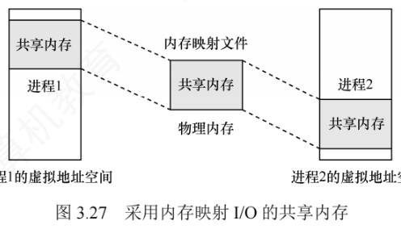
内存映射文件的好处主要有两个：
- 使程序员编程更简单——已建立映射的文件可直接按内存方式进行读写；
- 便于多个进程共享同一个磁盘文件。
3.2.8 虚拟存储器性能影响因素
缺页率是决定虚拟存储器性能的核心因素，它又受页面大小、分配给进程的物理块数、页面置换算法、写回磁盘的频率以及程序局部化程度等因素影响。
- 页面大小：根据局部性原理，页面较大时单次装入能覆盖更多局部访问区域，缺页率较低；页面较小时缺页率相对较高。但小页面页内碎片小、内存利用率高，大页面虽能缩短页表却会增大页内碎片；且页面越小，进程所需页数越多、页表越长。因此页面大小要在碎片控制与页表开销之间取得平衡。
- 分配的物理块数：物理块越多缺页率通常越低，但超过某一阈值后改善趋于平缓——此时进程的活跃页面已基本常驻内存，缺页主要由本就无须长期驻留的非活跃页面引起。因此只需保证活跃页面常驻内存，即可把缺页率控制在可接受范围内。
- 页面置换算法：好的算法能有效降低缺页率。例如 LRU、CLOCK 等通过页面的历史访问信息预测未来行为，优先保留可能再次被访问的页面，提高命中率。
- 写回磁盘的频率：脏页若“每换出一页就写回”，会频繁触发磁盘 I/O，效率极低。系统为此引入已修改换出页面链表：脏页换出时暂不写盘、挂入链表，积累足够数量后批量写回，显著减少磁盘 I/O 次数；此外，若进程在这些页面写回前再次访问它们，可直接从链表复用，无须重新从外存调入，进一步降低换入频率与开销。
- 程序的局部化程度：程序编写得越“局部化”，缺页率越低。例如数组按行存储时，访问应尽量按行顺序进行；若按列访问，就会破坏空间局部性，导致缺页率异常升高。
3.2.9 地址翻译的示例
408 统考越来越注重学科综合能力的考查。本节把操作系统的虚拟内存与《计算机组成原理》中 Cache 的内容结合起来，完整分析一次虚实地址的翻译过程。
题目条件
- 系统配置一个 TLB（快表）和一个 data Cache；
- 存储器按字节编址；
- 虚拟地址 14 位，物理地址 12 位；
- 页面大小 64 B；
- TLB 采用四路组相联，共 16 个条目；
- data Cache 采用物理寻址、直接映射方式，行大小 4 B，共 16 组。
要求分析对虚拟地址 0x03d4、0x00F1、0x0229 的访问过程。
地址结构的划分
按字节编址、页面 64 B，故页内偏移占 \(\log_2 64 = 6\) 位。虚拟地址 14 位，虚拟页号占 14 − 6 = 8 位；物理地址 12 位，物理页号占 12 − 6 = 6 位。TLB 四路组相联、共 16 个条目，故组数为 16 ÷ 4 = 4，组索引占 \(\log_2 4 = 2\) 位（取虚拟页号低 2 位），虚拟页号高 6 位作为 TLB 标记。data Cache 行大小 4 B，故物理地址最低 \(\log_2 4 = 2\) 位为块内偏移；Cache 共 16 组，接下来的 \(\log_2 16 = 4\) 位为组索引，剩余高 6 位为标记。地址结构如图 3.28 所示。
虚拟地址（14 位）：| TLB 标记（6 位） | TLB 组索引（2 位） | 页内偏移（6 位） |
└──────── 虚拟页号（8 位） ────────┘
物理地址（12 位）：| Cache 标记（6 位） | Cache 索引（4 位） | 块内偏移（2 位） |
└──────── 物理页号（6 位） ────────┘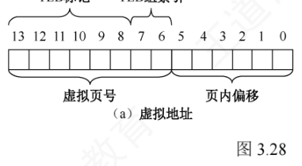
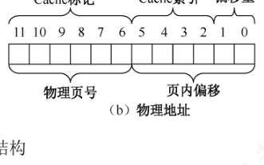
TLB、部分页表及 data Cache 的内容分别见表 3.1、表 3.2 和表 3.3。
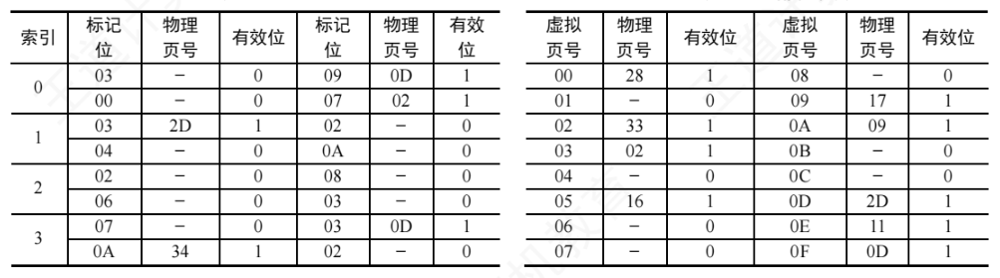
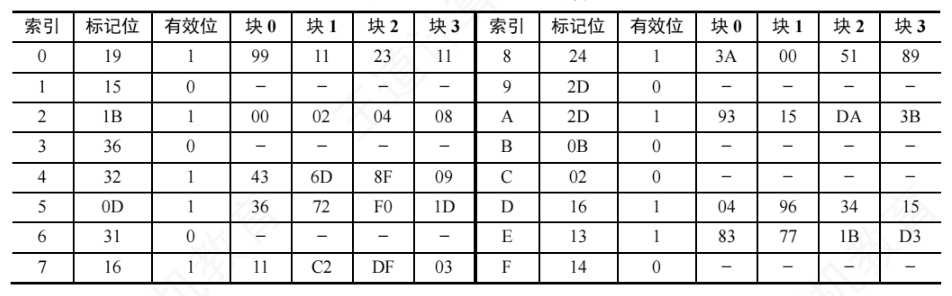
首先把三个十六进制虚拟地址转换成二进制，按地址结构拆分，结果如表 3.4 所示。
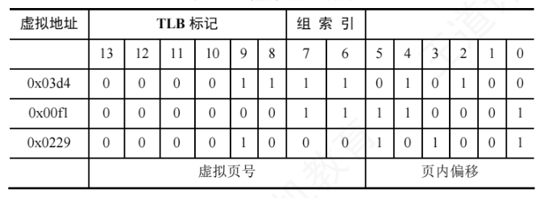
TLB 与页表的查找
由表 3.4 得到各地址的 TLB 标记、组索引和页内偏移，逐一判断对应页面是否已在主存中，并确定其物理地址：
- 0x03d4：TLB 标记 0x03、组索引 3。查 TLB 第 3 组，存在标记为 03 且有效位为 1 的项，TLB 命中，得物理页号 0x0D（001101）；拼接页内偏移 010100，物理地址为 0x354（0011 0101 0100）。
- 0x00F1：TLB 标记 0x00、组索引 3。查 TLB 第 3 组无匹配项，TLB 未命中，转查页表：虚拟页号 0x03，页表第 3 行有效位为 1，页面在主存中，物理页号 0x02（000010）；拼接页内偏移 110001，物理地址为 0x0B1（0000 1011 0001）。
- 0x0229：TLB 标记 0x02、组索引 0。查 TLB 第 0 组无匹配项；再查页表，虚拟页号 0x08 对应表项有效位为 0，页面不在主存中，触发缺页中断。
Cache 的查找
得到主存中页面的物理地址后，还要用物理地址访问数据，检查内容是否在 Cache 中。两个物理地址的拆分如表 3.5 所示。
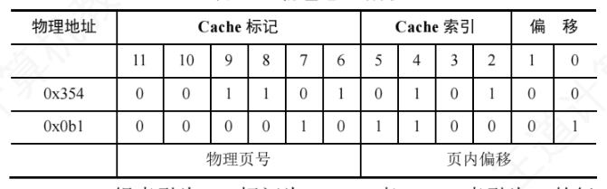
- 0x354：Cache 组索引 5、标记 0x0D。查索引为 5 的行，其标记为 0D 且有效位为 1，Cache 命中；块内偏移为 0（块 0），故虚拟地址 0x03d4 对应的数据为 36H。
- 0x0B1：Cache 组索引 0xC、标记 0x02。查索引为 0xC 的行，有效位为 0，Cache 未命中，需从主存中读取物理页号 0x2、页内偏移 0x31 处的数据。
该示例覆盖了从虚拟地址到 Cache 查找的典型情形，完整流程是：先查 TLB；TLB 未命中则访问页表完成虚实转换，若发现页面未调入主存（页表项无效）则触发缺页中断、从外存调页；再用得到的物理地址访问 Cache；Cache 未命中则进一步从主存读取数据。
3.2.10 本节小结
回应本节开头提出的三个问题：
- 为什么要引入虚拟内存？多道程序并发执行使进程共享处理器和内存：并发进程增多时，每个进程分到的处理器时间会平滑减少，但内存需求会急剧上升，进程可能因分不到足够内存而根本无法装入。物理内存的扩展受硬件限制，因此需要通过其他方式在逻辑上扩充内存容量，虚拟内存技术由此产生。
- 虚拟内存空间的大小由什么因素决定？主要由虚拟地址的位数决定。例如虚拟地址 32 位、按字节编址，则虚存空间最大为 \(2^{32}\,\text{B} = 4\,\text{GB}\)；试图定义超过 4 GB 的虚拟地址空间时，32 位地址最多只能寻址 4 GB，超出部分无法被访问。
- 虚拟内存是怎么解决问题的？会带来什么问题？虚拟内存利用外存在逻辑上扩充内存容量，通过页面的换入换出，使系统能运行总规模远超物理内存的多个进程；代价是每次缺页都要访问外存，平均访存时间增加，且置换算法不合适时可能频繁缺页、降低系统性能。
本节学习了 OPT、FIFO、LRU、CLOCK 四种页面置换算法，注意把它们与处理机调度算法区分开——当然二者也有内在联系：都属于资源调度机制，核心都是依据某种准则决定把有限资源分配给哪个请求者。处理机调度的准则包括优先级、响应比、时间片等；页面置换则聚焦页面的使用历史（是否被访问过、近期是否经常使用）。事实上，操作系统中几乎每类资源都有相应的调度策略，以“调度”为线索串联各类算法，有助于构建对操作系统整体架构的系统性理解。